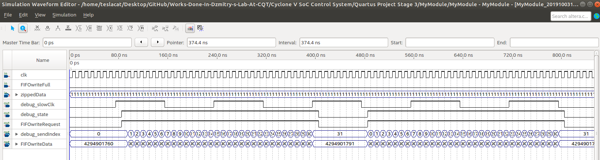
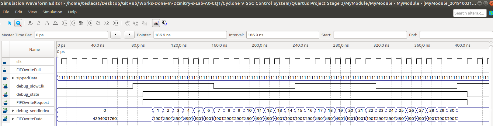

Verilog DataSender¶
| Date: | 3 Oct 2019 |
|---|
What is the idea?¶
- In this project we want to make a 16 channel counter to count photon numbers. Each Channel is 32 bits. So we need to send 16*32=512 bits of data via a FIFO each word of which is 32 bits.
- We separate the 32 bits data of each channel to 2 parts, thus there are 32 parts to send. Each part has 16 bits, we combine this with a label called
sendIndexinto the 32 bits data that we send to the FIFO:FIFOwriteData[32] = {actualData[16],sendIndex[16]}. - So that when we receive data from the FIFO, we know which part the data is.
Code¶
module DataSender(
input clk,
output FIFOwriteRequest,
output [31:0] FIFOwriteData,
input FIFOwriteFull,
input [511:0] zippedData, // 16 channels * 32 bits per channel = 512 bits
output debug_slowClk,
output debug_state,
output [15:0] debug_sendIndex
);
// Begin debug
assign debug_slowClk = slowClk;
assign debug_state = state;
assign debug_sendIndex = sendIndex;
// End debug
// Begin generate slow clock to send the data
reg [31:0] counter;
wire slowClk;
reg last_slowClk;
assign slowClk = counter[3];
always @(posedge clk) begin
counter <= counter+1;
last_slowClk <= slowClk;
end
// End generate slow clock to send the data
// Begin state machine
reg state;
localparam idle = 0;
localparam send = 1;
reg [15:0] sendIndex;
localparam sendIndexMax = 31; // 16 channels * 2 sends per channel = 32
always @(posedge clk) begin
case(state)
idle:
if(slowClk != last_slowClk) begin
state <= send;
sendIndex <=0;
end
send:
if(!FIFOwriteFull) begin
if(sendIndex < sendIndexMax) sendIndex <= sendIndex+1;
else state<= idle;
end
endcase
end
// Data format: FIFOwriteData[32] = {actualData[16],sendIndex[16]}
assign FIFOwriteData = { 16'hFFFF & (zippedData >> sendIndex*16), sendIndex };
assign FIFOwriteRequest = state;
// End state machine
endmodule
Simulation Result¶
- The following is simulated by
Quartus -> Files -> New -> University Program VWF

